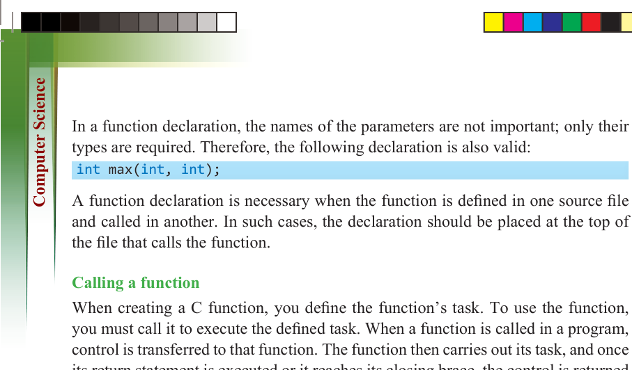
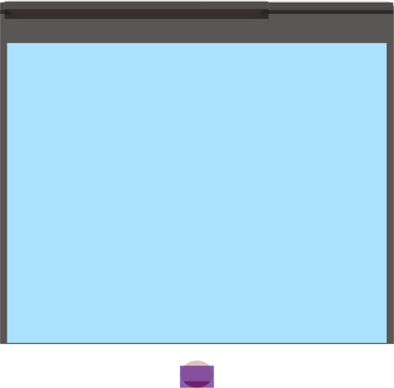

194
for Secondary Schools
In a function declaration, the names of the parameters are not important; only their types are required. Therefore, the following declaration is also valid:
int max(int, int);
A function declaration is necessary when the function is defined in one source file and called in another. In such cases, the declaration should be placed at the top of the file that calls the function.
Calling a function
When creating a C function, you define the function’s task. To use the function,
you must call it to execute the defined task. When a function is called in a program, control is transferred to that function. The function then carries out its task, and once its return statement is executed or it reaches its closing brace, the control is returned
to the main program. To call a function, you pass the necessary parameters along with
the function name. If the function returns a value, you can store the returned result.


#include <stdio.h>


/* Function declaration */
int max(int num1, int num2);//Declare the function'max'that returns the maximum of two numbers


int main()


{

/* Local variable definition */

int a = 100; // Initialise variable 'a' with 100 int b = 200; // Initialise variable 'b' with 200 int ret; // Variable to store the result of the max function
/* Calling the function to get the max value */
ret = max(a, b);//Call the max function and store the result in 'ret'
// Print the result printf("Max value is : %d\n", ret); // Output the maximum value return 0; // Exit the program
}
/* Function that returns the max between two numbers */ int max(int num1, int num2)
{
Program example 4.12:
Demonstration of a function call in C

ComputerScin